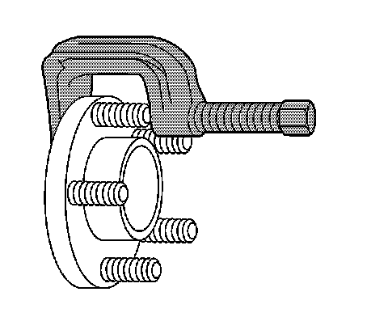
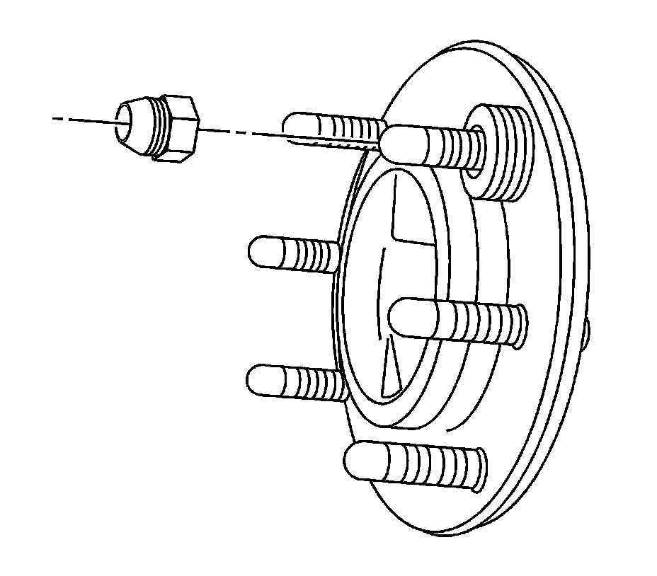

Front Suspension
Wheel Stud Replacement
Tools Required
J 43631 Ball Joint Remover
Removal Procedure
1. Raise and support the vehicle. Refer to Lifting and Jacking the Vehicle.
2. Remove the tire and wheel.
3. Remove the brake rotor.

4. Use the J 43631 to press the stud from the wheel bearing/hub.
Installation Procedure

1. Install a new stud. Use washers and a wheel nut and pull the new stud into the hub.
2. Install the brake rotor.
3. Install the tire and wheel.
4. Lower the vehicle.